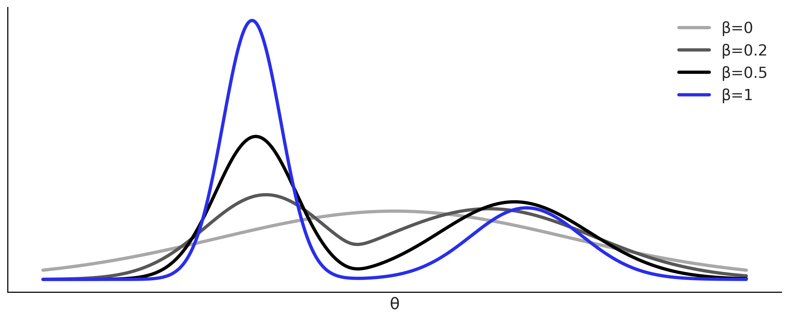
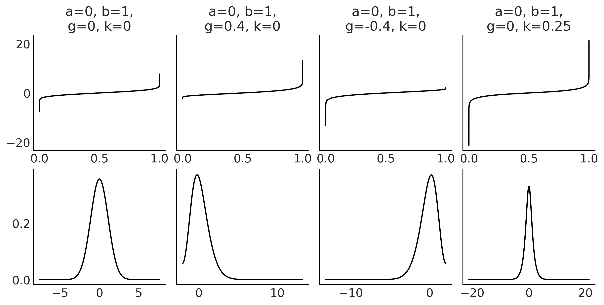
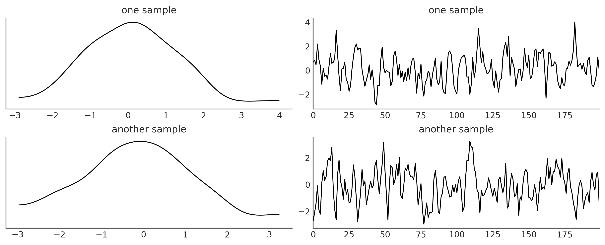

Code 8: Approximate Bayesian Computation#
This is a reference notebook for the book Bayesian Modeling and Computation in Python
The textbook is not needed to use or run this code, though the context and explanation is missing from this notebook.
If you’d like a copy it’s available from the CRC Press or from Amazon. ``
%matplotlib inline
import arviz as az
import matplotlib.pyplot as plt
import numpy as np
import pandas as pd
import pymc3 as pm
from scipy import stats
from scripts.rf_selector import select_model
az.style.use("arviz-grayscale")
plt.rcParams['figure.dpi'] = 300
np.random.seed(1346)
Fitting a Gaussian the ABC-way#
Figure 8.2#
a = stats.norm(-2.5, 0.5)
b = stats.norm(2.5, 1)
c = stats.norm(0, 3)
x = np.linspace(-6, 6, 500)
lpdf = 0.65 * a.pdf(x) + 0.35* b.pdf(x)
ppdf = c.pdf(x)
_, ax = plt.subplots(figsize=(10, 4))
for c, β in zip(["#A8A8A8", "#585858", "#000000", "#2a2eec"],
[0, 0.2, 0.5, 1]):
post = ppdf * lpdf**β
post /= post.sum()
ax.plot(x, post, lw=3, label=f"β={β}", color=c)
ax.set_yticks([])
ax.set_xticks([])
ax.set_xlabel("θ")
ax.legend()
plt.savefig("img/chp08/smc_tempering.png")

Fitting a Gaussian the ABC-way#
data = np.random.normal(loc=0, scale=1, size=1000)
def normal_simulator(μ, σ):
return np.random.normal(μ, σ, 1000)
Code 8.2 and Figure 8.3#
with pm.Model() as gauss:
μ = pm.Normal('μ', mu=0, sd=1)
σ = pm.HalfNormal('σ', sd=1)
s = pm.Simulator('s', normal_simulator, params=[μ, σ],
distance="gaussian",
sum_stat="sort",
epsilon=1,
observed=data)
trace_g = pm.sample_smc(kernel="ABC",
parallel=True)
Initializing SMC sampler...
Sampling 4 chains in 4 jobs
Stage: 0 Beta: 0.004
Stage: 1 Beta: 0.015
Stage: 2 Beta: 0.049
Stage: 3 Beta: 0.166
Stage: 4 Beta: 0.538
Stage: 5 Beta: 1.000
az.summary(trace_g)
/u/32/martino5/unix/anaconda3/envs/pymcv3/lib/python3.9/site-packages/arviz/data/io_pymc3.py:96: FutureWarning: Using `from_pymc3` without the model will be deprecated in a future release. Not using the model will return less accurate and less useful results. Make sure you use the model argument or call from_pymc3 within a model context.
warnings.warn(
| mean | sd | hdi_3% | hdi_97% | mcse_mean | mcse_sd | ess_bulk | ess_tail | r_hat | |
|---|---|---|---|---|---|---|---|---|---|
| μ | -0.062 | 0.044 | -0.148 | 0.019 | 0.0 | 0.0 | 7913.0 | 7584.0 | 1.0 |
| σ | 0.998 | 0.039 | 0.926 | 1.069 | 0.0 | 0.0 | 8025.0 | 7463.0 | 1.0 |
az.plot_trace(trace_g, kind="rank_vlines", figsize=(10, 4));
plt.savefig('img/chp08/trace_g.png')
/u/32/martino5/unix/anaconda3/envs/pymcv3/lib/python3.9/site-packages/arviz/data/io_pymc3.py:96: FutureWarning: Using `from_pymc3` without the model will be deprecated in a future release. Not using the model will return less accurate and less useful results. Make sure you use the model argument or call from_pymc3 within a model context.
warnings.warn(
Choosing the Distance Function, \(\epsilon\) and the Summary Statistics#
Codes 8.4, 8.5, 8.6, 8.7, and 8.8#
with pm.Model() as gauss_001:
μ = pm.Normal('μ', mu=0, sd=1)
σ = pm.HalfNormal('σ', sd=1)
s = pm.Simulator('s', normal_simulator, params=[μ, σ],
sum_stat="sort",
epsilon=0.1,
observed=data)
trace_g_001, sim_data_001 = pm.sample_smc(kernel="ABC",
parallel=True,
save_sim_data=True)
with pm.Model() as gauss_01:
μ = pm.Normal('μ', mu=0, sd=1)
σ = pm.HalfNormal('σ', sd=1)
s = pm.Simulator('s', normal_simulator, params=[μ, σ],
sum_stat="sort",
epsilon=1,
observed=data)
trace_g_01, sim_data_01 = pm.sample_smc(kernel="ABC",
parallel=True,
save_sim_data=True)
with pm.Model() as gauss_02:
μ = pm.Normal('μ', mu=0, sd=1)
σ = pm.HalfNormal('σ', sd=1)
s = pm.Simulator('s', normal_simulator, params=[μ, σ],
sum_stat="sort",
epsilon=2,
observed=data)
trace_g_02, sim_data_02 = pm.sample_smc(kernel="ABC",
parallel=True,
save_sim_data=True)
with pm.Model() as gauss_05:
μ = pm.Normal('μ', mu=0, sd=1)
σ = pm.HalfNormal('σ', sd=1)
s = pm.Simulator('s', normal_simulator, params=[μ, σ],
sum_stat="sort",
epsilon=5,
observed=data)
trace_g_05, sim_data_05 = pm.sample_smc(kernel="ABC",
parallel=True,
save_sim_data=True)
with pm.Model() as gauss_10:
μ = pm.Normal('μ', mu=0, sd=1)
σ = pm.HalfNormal('σ', sd=1)
s = pm.Simulator('s', normal_simulator, params=[μ, σ],
sum_stat="sort",
epsilon=10,
observed=data)
trace_g_10, sim_data_10 = pm.sample_smc(kernel="ABC",
parallel=True,
save_sim_data=True)
with pm.Model() as gauss_NUTS:
μ = pm.Normal('μ', mu=0, sd=1)
σ = pm.HalfNormal('σ', sd=1)
s = pm.Normal('s', μ, σ,
observed=data)
trace_g_nuts = pm.sample()
Initializing SMC sampler...
Sampling 4 chains in 4 jobs
Stage: 0 Beta: 0.000
Stage: 1 Beta: 0.000
Stage: 2 Beta: 0.000
Stage: 3 Beta: 0.002
Stage: 4 Beta: 0.005
Stage: 5 Beta: 0.015
Stage: 6 Beta: 0.034
Stage: 7 Beta: 0.064
Stage: 8 Beta: 0.114
Stage: 9 Beta: 0.213
Stage: 10 Beta: 0.325
Stage: 11 Beta: 0.465
Stage: 12 Beta: 1.000
Initializing SMC sampler...
Sampling 4 chains in 4 jobs
Stage: 0 Beta: 0.004
Stage: 1 Beta: 0.015
Stage: 2 Beta: 0.052
Stage: 3 Beta: 0.182
Stage: 4 Beta: 0.590
Stage: 5 Beta: 1.000
Initializing SMC sampler...
Sampling 4 chains in 4 jobs
Stage: 0 Beta: 0.015
Stage: 1 Beta: 0.060
Stage: 2 Beta: 0.218
Stage: 3 Beta: 0.753
Stage: 4 Beta: 1.000
Initializing SMC sampler...
Sampling 4 chains in 4 jobs
Stage: 0 Beta: 0.095
Stage: 1 Beta: 0.379
Stage: 2 Beta: 1.000
Initializing SMC sampler...
Sampling 4 chains in 4 jobs
Stage: 0 Beta: 0.365
Stage: 1 Beta: 1.000
<ipython-input-8-931bddbea258>:62: FutureWarning: In v4.0, pm.sample will return an `arviz.InferenceData` object instead of a `MultiTrace` by default. You can pass return_inferencedata=True or return_inferencedata=False to be safe and silence this warning.
trace_g_nuts = pm.sample()
Auto-assigning NUTS sampler...
Initializing NUTS using jitter+adapt_diag...
Multiprocess sampling (4 chains in 4 jobs)
NUTS: [σ, μ]
100.00% [8000/8000 00:01<00:00 Sampling 4 chains, 0 divergences]
Sampling 4 chains for 1_000 tune and 1_000 draw iterations (4_000 + 4_000 draws total) took 2 seconds.
traces = [trace_g_nuts, trace_g_01, trace_g_05, trace_g_10]
az.plot_forest(traces, model_names=["NUTS", "ϵ 1", "ϵ 5", "ϵ 10"],
colors=["#2a2eec", "#000000", "#585858", "#A8A8A8"],
figsize=(8, 3));
plt.savefig("img/chp08/trace_g_many_eps.png")
/u/32/martino5/unix/anaconda3/envs/pymcv3/lib/python3.9/site-packages/arviz/data/io_pymc3.py:96: FutureWarning: Using `from_pymc3` without the model will be deprecated in a future release. Not using the model will return less accurate and less useful results. Make sure you use the model argument or call from_pymc3 within a model context.
warnings.warn(
az.plot_trace(trace_g_001, kind="rank_vlines", figsize=(10, 4));
plt.savefig("img/chp08/trace_g_eps_too_low.png")
/u/32/martino5/unix/anaconda3/envs/pymcv3/lib/python3.9/site-packages/arviz/data/io_pymc3.py:96: FutureWarning: Using `from_pymc3` without the model will be deprecated in a future release. Not using the model will return less accurate and less useful results. Make sure you use the model argument or call from_pymc3 within a model context.
warnings.warn(
traces_ = [trace_g_001, trace_g_01, trace_g_05, trace_g_10]
sim_data_ = [sim_data_001, sim_data_01, sim_data_05, sim_data_10]
epsilons = [0.1, 1, 5, 10]
_, axes = plt.subplots(2, 2, figsize=(10,5))
for i, ax in enumerate(axes.ravel()):
dada = az.from_pymc3(traces_[i],
posterior_predictive=sim_data_[i])
pp_vals = np.reshape(sim_data_[i]["s"], (8000, -1))
tstat_pit = np.mean(pp_vals <= data, axis=0)
_, tstat_pit_dens = az.kde(tstat_pit)
ax.axhline(1, color="w")
az.plot_bpv(dada, kind="u_value", ax=ax, reference="analytical")
ax.tick_params(axis='both', pad=7)
ax.set_title(f"ϵ={epsilons[i]}, mse={np.mean((1 - tstat_pit_dens)**2) * 100:.2f}")
plt.savefig("img/chp08/bpv_g_many_eps_00.png")
/u/32/martino5/unix/anaconda3/envs/pymcv3/lib/python3.9/site-packages/arviz/data/io_pymc3.py:96: FutureWarning: Using `from_pymc3` without the model will be deprecated in a future release. Not using the model will return less accurate and less useful results. Make sure you use the model argument or call from_pymc3 within a model context.
warnings.warn(
/u/32/martino5/unix/anaconda3/envs/pymcv3/lib/python3.9/site-packages/arviz/data/io_pymc3.py:96: FutureWarning: Using `from_pymc3` without the model will be deprecated in a future release. Not using the model will return less accurate and less useful results. Make sure you use the model argument or call from_pymc3 within a model context.
warnings.warn(
/u/32/martino5/unix/anaconda3/envs/pymcv3/lib/python3.9/site-packages/arviz/data/io_pymc3.py:96: FutureWarning: Using `from_pymc3` without the model will be deprecated in a future release. Not using the model will return less accurate and less useful results. Make sure you use the model argument or call from_pymc3 within a model context.
warnings.warn(
/u/32/martino5/unix/anaconda3/envs/pymcv3/lib/python3.9/site-packages/arviz/data/io_pymc3.py:96: FutureWarning: Using `from_pymc3` without the model will be deprecated in a future release. Not using the model will return less accurate and less useful results. Make sure you use the model argument or call from_pymc3 within a model context.
warnings.warn(
_, ax = plt.subplots(2, 2, figsize=(10,5))
ax = ax.ravel()
for i in range(4):
dada = az.from_pymc3(traces_[i],
posterior_predictive=sim_data_[i])
az.plot_bpv(dada, kind="p_value", reference='samples', color="C4", ax=ax[i],
plot_ref_kwargs={"color":"C2"})
ax[i].set_title(f"ϵ={epsilons[i]}")
plt.savefig("img/chp08/bpv_g_many_eps_01.png")
/u/32/martino5/unix/anaconda3/envs/pymcv3/lib/python3.9/site-packages/arviz/data/io_pymc3.py:96: FutureWarning: Using `from_pymc3` without the model will be deprecated in a future release. Not using the model will return less accurate and less useful results. Make sure you use the model argument or call from_pymc3 within a model context.
warnings.warn(
/u/32/martino5/unix/anaconda3/envs/pymcv3/lib/python3.9/site-packages/arviz/data/io_pymc3.py:96: FutureWarning: Using `from_pymc3` without the model will be deprecated in a future release. Not using the model will return less accurate and less useful results. Make sure you use the model argument or call from_pymc3 within a model context.
warnings.warn(
/u/32/martino5/unix/anaconda3/envs/pymcv3/lib/python3.9/site-packages/arviz/data/io_pymc3.py:96: FutureWarning: Using `from_pymc3` without the model will be deprecated in a future release. Not using the model will return less accurate and less useful results. Make sure you use the model argument or call from_pymc3 within a model context.
warnings.warn(
/u/32/martino5/unix/anaconda3/envs/pymcv3/lib/python3.9/site-packages/arviz/data/io_pymc3.py:96: FutureWarning: Using `from_pymc3` without the model will be deprecated in a future release. Not using the model will return less accurate and less useful results. Make sure you use the model argument or call from_pymc3 within a model context.
warnings.warn(
_, axes = plt.subplots(2, 2, figsize=(10,5))
for i, ax in enumerate(axes.ravel()):
dada = az.from_pymc3(traces_[i],
posterior_predictive=sim_data_[i])
az.plot_ppc(dada, num_pp_samples=100, ax=ax, color="C2",
mean=False, legend=False, observed=False)
az.plot_kde(dada.observed_data["s"], plot_kwargs={"color":"C4"}, ax=ax)
ax.set_xlabel("s")
ax.set_title(f"ϵ={epsilons[i]}")
plt.savefig("img/chp08/ppc_g_many_eps.png")
/u/32/martino5/unix/anaconda3/envs/pymcv3/lib/python3.9/site-packages/arviz/data/io_pymc3.py:96: FutureWarning: Using `from_pymc3` without the model will be deprecated in a future release. Not using the model will return less accurate and less useful results. Make sure you use the model argument or call from_pymc3 within a model context.
warnings.warn(
/u/32/martino5/unix/anaconda3/envs/pymcv3/lib/python3.9/site-packages/arviz/data/io_pymc3.py:96: FutureWarning: Using `from_pymc3` without the model will be deprecated in a future release. Not using the model will return less accurate and less useful results. Make sure you use the model argument or call from_pymc3 within a model context.
warnings.warn(
/u/32/martino5/unix/anaconda3/envs/pymcv3/lib/python3.9/site-packages/arviz/data/io_pymc3.py:96: FutureWarning: Using `from_pymc3` without the model will be deprecated in a future release. Not using the model will return less accurate and less useful results. Make sure you use the model argument or call from_pymc3 within a model context.
warnings.warn(
/u/32/martino5/unix/anaconda3/envs/pymcv3/lib/python3.9/site-packages/arviz/data/io_pymc3.py:96: FutureWarning: Using `from_pymc3` without the model will be deprecated in a future release. Not using the model will return less accurate and less useful results. Make sure you use the model argument or call from_pymc3 within a model context.
warnings.warn(
g-and-k distributions#
Figure 8.9#
data = pd.read_csv("../data/air_pollution_bsas.csv")
bsas_co = data["co"].dropna().values
_, axes = plt.subplots(2,1, figsize=(10,4), sharey=True)
axes[0].hist(bsas_co, bins="auto", color="C1", density=True)
axes[0].set_yticks([])
axes[1].hist(bsas_co[bsas_co < 3], bins="auto", color="C1", density=True)
axes[1].set_yticks([])
axes[1].set_xlabel("CO levels (ppm)")
plt.savefig("img/chp08/co_ppm_bsas.png")
f"We have {sum(bsas_co > 3)} observations larger than 3 ppm"
'We have 8 observations larger than 3 ppm'
Code 8.4 and Figure 8.10#
class g_and_k_quantile:
def __init__(self):
self.quantile_normal = stats.norm(0, 1).ppf
self.pdf_normal = stats.norm(0, 1).pdf
def ppf(self, x, a, b, g, k):
z = self.quantile_normal(x)
return a + b * (1 + 0.8 * np.tanh(g*z/2)) * ((1 + z**2)**k) * z
def rvs(self, samples, a, b, g, k):
x = np.random.uniform(0, 1, samples)
return self.ppf(x, a, b, g, k)
def cdf(self, x, a, b, g, k, zscale=False):
optimize.fminbound(f, -5, 5)
def pdf(self, x, a, b, g, k):
#z = cdf(x, a, b, g, k)
z = x
z_sq = z**2
term1 = (1+z_sq)**k
term2 = 1+0.8*np.tanh(g*x/2)
term3 = (1+(2*k+1)*z_sq)/(1+z_sq)
term4 = 0.8*g*z/(2*np.cosh(g*z/2)**2)
deriv = b*term1*(term2*term3+term4)
return self.pdf_normal(x) / deriv
gk = g_and_k_quantile()
u = np.linspace(1E-14, 1-1E-14, 10000)
params = ((0, 1, 0, 0),
(0, 1, .4, 0),
(0, 1,-.4, 0),
(0, 1, 0, 0.25))
_, ax = plt.subplots(2, 4, sharey="row", figsize=(10, 5))
for i, p in enumerate(params):
a, b, g, k = p
ppf = gk.ppf(u, a, b, g, k)
ax[0, i].plot(u, ppf)
ax[0, i].set_title(f"a={a}, b={b},\ng={g}, k={k}")
#ax[1, i].plot(x, gk.pdf(x, a, b, g, k))
az.plot_kde(ppf, ax=ax[1, i], bw=0.5)
plt.savefig("img/chp08/gk_quantile.png")

Code 8.5#
def octo_summary(x):
e1, e2, e3, e4, e5, e6, e7 = np.quantile(x, [0.125, 0.25, 0.375, 0.5, 0.625, 0.75, 0.875])
sa = e4
sb = e6 - e2
sg = (e6 + e2 - 2*e4)/sb
sk = (e7 - e5 + e3 - e1)/sb
return np.array([sa, sb, sg, sk])
Code 8.6#
gk = g_and_k_quantile()
def gk_simulator(a, b, g, k):
return gk.rvs(len(bsas_co), a, b, g, k)
Code 8.7 and Figure 8.11#
with pm.Model() as gkm:
a = pm.HalfNormal('a', sd=1)
b = pm.HalfNormal('b', sd=1)
g = pm.HalfNormal('g', sd=1)
k = pm.HalfNormal('k', sd=1)
s = pm.Simulator('s', gk_simulator, params=[a, b, g, k],
sum_stat=octo_summary,
epsilon=0.1,
observed=bsas_co)
trace_gk, sim_data_gk = pm.sample_smc(kernel="ABC",
parallel=True,
save_sim_data=True,
)
Initializing SMC sampler...
Sampling 4 chains in 4 jobs
Stage: 0 Beta: 0.013
Stage: 1 Beta: 0.066
Stage: 2 Beta: 0.235
Stage: 3 Beta: 0.642
Stage: 4 Beta: 1.000
az.summary(trace_gk)
/u/32/martino5/unix/anaconda3/envs/pymcv3/lib/python3.9/site-packages/arviz/data/io_pymc3.py:96: FutureWarning: Using `from_pymc3` without the model will be deprecated in a future release. Not using the model will return less accurate and less useful results. Make sure you use the model argument or call from_pymc3 within a model context.
warnings.warn(
| mean | sd | hdi_3% | hdi_97% | mcse_mean | mcse_sd | ess_bulk | ess_tail | r_hat | |
|---|---|---|---|---|---|---|---|---|---|
| a | 0.505 | 0.099 | 0.312 | 0.683 | 0.001 | 0.001 | 7692.0 | 7789.0 | 1.0 |
| b | 0.196 | 0.070 | 0.062 | 0.325 | 0.001 | 0.001 | 7927.0 | 8040.0 | 1.0 |
| g | 0.451 | 0.288 | 0.007 | 0.954 | 0.003 | 0.002 | 7911.0 | 7594.0 | 1.0 |
| k | 0.145 | 0.087 | 0.005 | 0.296 | 0.001 | 0.001 | 7492.0 | 7450.0 | 1.0 |
az.plot_trace(trace_gk, kind="rank_vlines")
plt.savefig("img/chp08/trace_gk.png")
/u/32/martino5/unix/anaconda3/envs/pymcv3/lib/python3.9/site-packages/arviz/data/io_pymc3.py:96: FutureWarning: Using `from_pymc3` without the model will be deprecated in a future release. Not using the model will return less accurate and less useful results. Make sure you use the model argument or call from_pymc3 within a model context.
warnings.warn(
axes = az.plot_pair(trace_gk,
kind="kde",
marginals=True,
textsize=45,
kde_kwargs={"contourf_kwargs":{"cmap":plt.cm.viridis}},
)
for ax, pad in zip(axes[:,0], (70, 30, 30, 30)):
ax.set_ylabel(ax.get_ylabel(), rotation=0, labelpad=pad)
plt.savefig("img/chp08/pair_gk.png")
/u/32/martino5/unix/anaconda3/envs/pymcv3/lib/python3.9/site-packages/arviz/data/io_pymc3.py:96: FutureWarning: Using `from_pymc3` without the model will be deprecated in a future release. Not using the model will return less accurate and less useful results. Make sure you use the model argument or call from_pymc3 within a model context.
warnings.warn(

Approximating moving averages#
Code 8.8 and Figure 8.12#
def moving_average_2(θ1, θ2, n_obs=200):
λ = np.random.normal(0, 1, n_obs+2)
y = λ[2:] + θ1*λ[1:-1] + θ2*λ[:-2]
return y
We are calling the simulator one more time to generate “observed data”.
θ1_true = 0.7
θ2_true = 0.3
y_obs = moving_average_2(θ1_true, θ2_true)
az.plot_trace({'one sample':moving_average_2(θ1_true, θ2_true),
'another sample':moving_average_2(θ1_true, θ2_true)},
trace_kwargs={'alpha':1},
figsize=(10, 4)
)
plt.savefig("img/chp08/ma2_simulator_abc.png")

Code 8.9#
Code 8.10 and Figure 8.13#
with pm.Model() as model_ma2:
θ1 = pm.Uniform('θ1', -2, 2)
θ2 = pm.Uniform('θ2', -1, 1)
p1 = pm.Potential("p1", pm.math.switch(θ1+θ2 > -1, 0, -np.inf))
p2 = pm.Potential("p2", pm.math.switch(θ1-θ2 < 1, 0, -np.inf))
y = pm.Simulator('y', moving_average_2,
params=[θ1, θ2],
sum_stat=autocov,
epsilon=0.1,
observed=y_obs)
trace_ma2 = pm.sample_smc(3000, kernel="ABC", parallel=True)
Initializing SMC sampler...
Sampling 4 chains in 4 jobs
Potentials will be added to the prior term
/u/32/martino5/unix/anaconda3/envs/pymcv3/lib/python3.9/site-packages/pymc3/sampling.py:1925: UserWarning: The effect of Potentials on other parameters is ignored during prior predictive sampling. This is likely to lead to invalid or biased predictive samples.
warnings.warn(
/u/32/martino5/unix/anaconda3/envs/pymcv3/lib/python3.9/site-packages/pymc3/sampling.py:1925: UserWarning: The effect of Potentials on other parameters is ignored during prior predictive sampling. This is likely to lead to invalid or biased predictive samples.
warnings.warn(
/u/32/martino5/unix/anaconda3/envs/pymcv3/lib/python3.9/site-packages/pymc3/sampling.py:1925: UserWarning: The effect of Potentials on other parameters is ignored during prior predictive sampling. This is likely to lead to invalid or biased predictive samples.
warnings.warn(
/u/32/martino5/unix/anaconda3/envs/pymcv3/lib/python3.9/site-packages/pymc3/sampling.py:1925: UserWarning: The effect of Potentials on other parameters is ignored during prior predictive sampling. This is likely to lead to invalid or biased predictive samples.
warnings.warn(
/u/32/martino5/unix/anaconda3/envs/pymcv3/lib/python3.9/site-packages/pymc3/smc/smc.py:240: RuntimeWarning: invalid value encountered in subtract
(proposal_logp + backward) - (self.posterior_logp + forward)
/u/32/martino5/unix/anaconda3/envs/pymcv3/lib/python3.9/site-packages/pymc3/smc/smc.py:240: RuntimeWarning: invalid value encountered in subtract
(proposal_logp + backward) - (self.posterior_logp + forward)
/u/32/martino5/unix/anaconda3/envs/pymcv3/lib/python3.9/site-packages/pymc3/smc/smc.py:240: RuntimeWarning: invalid value encountered in subtract
(proposal_logp + backward) - (self.posterior_logp + forward)
Stage: 0 Beta: 0.016
/u/32/martino5/unix/anaconda3/envs/pymcv3/lib/python3.9/site-packages/pymc3/smc/smc.py:240: RuntimeWarning: invalid value encountered in subtract
(proposal_logp + backward) - (self.posterior_logp + forward)
Stage: 1 Beta: 0.084
Stage: 2 Beta: 0.357
Stage: 3 Beta: 1.000
az.plot_trace(trace_ma2, kind="rank_vlines", figsize=(10, 4))
plt.savefig("img/chp08/ma2_trace.png")
/u/32/martino5/unix/anaconda3/envs/pymcv3/lib/python3.9/site-packages/arviz/data/io_pymc3.py:96: FutureWarning: Using `from_pymc3` without the model will be deprecated in a future release. Not using the model will return less accurate and less useful results. Make sure you use the model argument or call from_pymc3 within a model context.
warnings.warn(
#ax = az.plot_pair(t_p, var_names=["θ1", "θ2"], marginals=True)
axes = az.plot_pair(trace_ma2, kind="kde", var_names=["θ1", "θ2"],
marginals=True, figsize=(10,5),
kde_kwargs={"contourf_kwargs":{"cmap":plt.cm.viridis}},
point_estimate="mean",
point_estimate_kwargs={"ls":"none"},
point_estimate_marker_kwargs={"marker":".",
"facecolor":"k",
"zorder":2})
axes[1,0].set_xlim(-2.1, 2.1)
axes[1,0].set_ylim(-1.1, 1.1)
axes[1,0].set_ylabel(axes[1,0].get_ylabel(), rotation=0)
axes[1,0].plot([0, 2, -2, 0], [-1, 1, 1, -1], "C2", lw=2)
plt.savefig("img/chp08/ma2_triangle.png")
/u/32/martino5/unix/anaconda3/envs/pymcv3/lib/python3.9/site-packages/arviz/data/io_pymc3.py:96: FutureWarning: Using `from_pymc3` without the model will be deprecated in a future release. Not using the model will return less accurate and less useful results. Make sure you use the model argument or call from_pymc3 within a model context.
warnings.warn(
Model Comparison in the ABC context#
To reproduce the figures in the book, run loo_abc.py
Model choice via random forest#
def moving_average_1(θ1, n_obs=500):
λ = np.random.normal(0, 1, n_obs+1)
y = λ[2:] + θ1*λ[1:-1]
return y
def moving_average_2(θ1, θ2, n_obs=500):
λ = np.random.normal(0, 1, n_obs+2)
y = λ[2:] + θ1*λ[1:-1] + θ2*λ[:-2]
return y
θ1_true = 0.7
θ2_true = 0.3
y_obs = moving_average_2(θ1_true, θ2_true)
Code 8.12#
with pm.Model() as model_ma1:
θ1 = pm.Uniform('θ1', -1, 1)
y = pm.Simulator('y', moving_average_1,
params=[θ1], sum_stat=autocov, epsilon=0.1, observed=y_obs)
trace_ma1 = pm.sample_smc(3000, kernel="ABC", parallel=True)
Initializing SMC sampler...
Sampling 4 chains in 4 jobs
Stage: 0 Beta: 0.033
Stage: 1 Beta: 0.174
Stage: 2 Beta: 0.534
Stage: 3 Beta: 1.000
with pm.Model() as model_ma2:
θ1 = pm.Uniform('θ1', -2, 2)
θ2 = pm.Uniform('θ2', -1, 1)
p1 = pm.Potential("p1", pm.math.switch(θ1+θ2 > -1, 0, -np.inf))
p2 = pm.Potential("p2", pm.math.switch(θ1-θ2 < 1, 0, -np.inf))
y = pm.Simulator('y', moving_average_2,
params=[θ1, θ2],
sum_stat=autocov,
epsilon=0.1,
observed=y_obs)
trace_ma2 = pm.sample_smc(3000, kernel="ABC", parallel=True)
Initializing SMC sampler...
Sampling 4 chains in 4 jobs
Potentials will be added to the prior term
/u/32/martino5/unix/anaconda3/envs/pymcv3/lib/python3.9/site-packages/pymc3/sampling.py:1925: UserWarning: The effect of Potentials on other parameters is ignored during prior predictive sampling. This is likely to lead to invalid or biased predictive samples.
warnings.warn(
/u/32/martino5/unix/anaconda3/envs/pymcv3/lib/python3.9/site-packages/pymc3/sampling.py:1925: UserWarning: The effect of Potentials on other parameters is ignored during prior predictive sampling. This is likely to lead to invalid or biased predictive samples.
warnings.warn(
/u/32/martino5/unix/anaconda3/envs/pymcv3/lib/python3.9/site-packages/pymc3/sampling.py:1925: UserWarning: The effect of Potentials on other parameters is ignored during prior predictive sampling. This is likely to lead to invalid or biased predictive samples.
warnings.warn(
/u/32/martino5/unix/anaconda3/envs/pymcv3/lib/python3.9/site-packages/pymc3/sampling.py:1925: UserWarning: The effect of Potentials on other parameters is ignored during prior predictive sampling. This is likely to lead to invalid or biased predictive samples.
warnings.warn(
/u/32/martino5/unix/anaconda3/envs/pymcv3/lib/python3.9/site-packages/pymc3/smc/smc.py:240: RuntimeWarning: invalid value encountered in subtract
(proposal_logp + backward) - (self.posterior_logp + forward)
/u/32/martino5/unix/anaconda3/envs/pymcv3/lib/python3.9/site-packages/pymc3/smc/smc.py:240: RuntimeWarning: invalid value encountered in subtract
(proposal_logp + backward) - (self.posterior_logp + forward)
Stage: 0 Beta: 0.016
/u/32/martino5/unix/anaconda3/envs/pymcv3/lib/python3.9/site-packages/pymc3/smc/smc.py:240: RuntimeWarning: invalid value encountered in subtract
(proposal_logp + backward) - (self.posterior_logp + forward)
/u/32/martino5/unix/anaconda3/envs/pymcv3/lib/python3.9/site-packages/pymc3/smc/smc.py:240: RuntimeWarning: invalid value encountered in subtract
(proposal_logp + backward) - (self.posterior_logp + forward)
Stage: 1 Beta: 0.087
Stage: 2 Beta: 0.377
Stage: 3 Beta: 1.000
Code 8.13#
idata_ma1 = az.from_pymc3(trace_ma1)
lpll = {"s":np.array(trace_ma1.report.log_pseudolikelihood)}
idata_ma1.log_likelihood = az.data.base.dict_to_dataset(lpll)
idata_ma2 = az.from_pymc3(trace_ma2)
lpll = {"s":trace_ma2.report.log_pseudolikelihood}
idata_ma2.log_likelihood = az.data.base.dict_to_dataset(lpll)
cmp = az.compare({"model_ma1":idata_ma1, "model_ma2":idata_ma2})
cmp
/u/32/martino5/unix/anaconda3/envs/pymcv3/lib/python3.9/site-packages/arviz/data/io_pymc3.py:96: FutureWarning: Using `from_pymc3` without the model will be deprecated in a future release. Not using the model will return less accurate and less useful results. Make sure you use the model argument or call from_pymc3 within a model context.
warnings.warn(
/u/32/martino5/unix/anaconda3/envs/pymcv3/lib/python3.9/site-packages/arviz/stats/stats.py:145: UserWarning: The default method used to estimate the weights for each model,has changed from BB-pseudo-BMA to stacking
warnings.warn(
/u/32/martino5/unix/anaconda3/envs/pymcv3/lib/python3.9/site-packages/arviz/stats/stats.py:655: UserWarning: Estimated shape parameter of Pareto distribution is greater than 0.7 for one or more samples. You should consider using a more robust model, this is because importance sampling is less likely to work well if the marginal posterior and LOO posterior are very different. This is more likely to happen with a non-robust model and highly influential observations.
warnings.warn(
| rank | loo | p_loo | d_loo | weight | se | dse | warning | loo_scale | |
|---|---|---|---|---|---|---|---|---|---|
| model_ma2 | 0 | -2.283655 | 1.594485 | 0.000000 | 1.0 | 0.160007 | 0.000000 | True | log |
| model_ma1 | 1 | -3.558110 | 2.075971 | 1.274455 | 0.0 | 1.443720 | 1.603727 | False | log |
Code 8.14#
from functools import partial
select_model([(model_ma1, trace_ma1), (model_ma2, trace_ma2)],
statistics=[partial(autocov, n=6)],
n_samples=10000,
observations=y_obs)
/u/32/martino5/unix/anaconda3/envs/pymcv3/lib/python3.9/site-packages/pymc3/sampling.py:1689: UserWarning: samples parameter is smaller than nchains times ndraws, some draws and/or chains may not be represented in the returned posterior predictive sample
warnings.warn(
/u/32/martino5/unix/anaconda3/envs/pymcv3/lib/python3.9/site-packages/pymc3/sampling.py:1698: UserWarning: The effect of Potentials on other parameters is ignored during posterior predictive sampling. This is likely to lead to invalid or biased predictive samples.
warnings.warn(
(1, 0.9799999999999998)